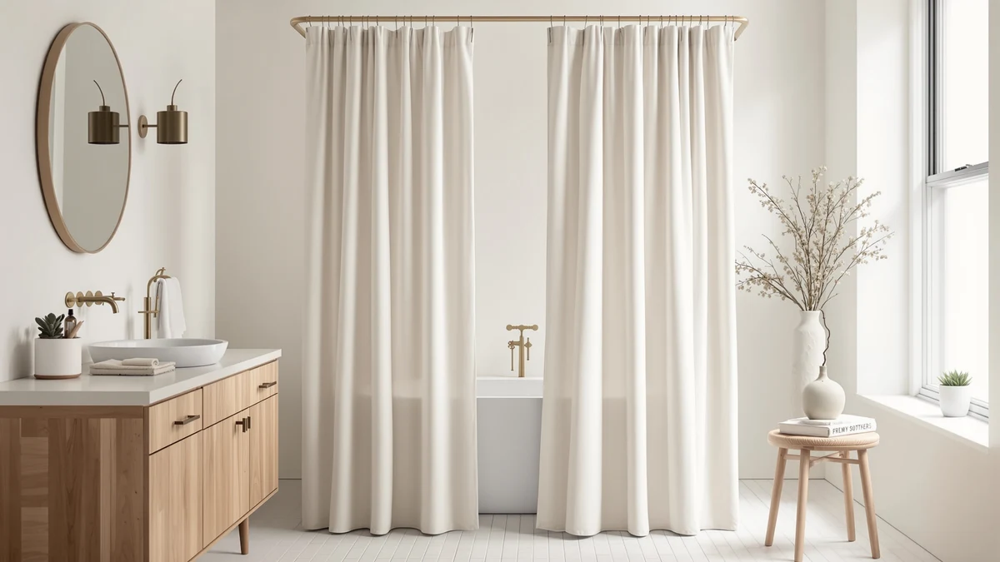

Preston Lane Stonebrigdge Linen Cotton Shower Curtain Review (2026): Worth It?
Prices and picks verified as of November 2026. Independent, reader-supported reviews.


Quick Answer
This Preston Lane Stonebrigdge Linen Cotton shower curtain review found a $90, 72 by 72 inch 100% cotton curtain that costs noticeably more than the three cotton alternatives we compared it against. Shoppers who want that heavier cotton weave and a square cut should go with Preston Lane, but anyone watching price should compare Burlywood Birch, Bean Products, or Martha Stewart first.
Our pick: Preston Lane Stonebrigdge Linen Cotton ($90.00) Check Price on Amazon
Bottom line: our top pick is the Preston Lane Stonebrigdge Linen Cotton Shower Curtain at $90.
Things to Know Before You Buy
- The Preston Lane Stonebrigdge Linen Cotton is listed as 100% cotton in a single 72 by 72 inch size, sold as a one-pack.
- At $90, it costs $20 to $30 more than the three cotton curtains we compared it against in this review.
- None of the four curtains in this comparison lists a public star rating or review count, so none has a published track record to lean on.
- A square 72 by 72 inch cut fits a standard tub or stall, but it will not stretch to cover an extra-wide or extra-long opening.
This Preston Lane Stonebrigdge Linen Cotton shower curtain review puts the curtain's $90 price, 100% cotton build, and square 72 by 72 inch cut next to three other cotton curtains shoppers often weigh against it. Preston Lane prices the Stonebrigdge well above the rest of this field, and that price gap shapes nearly everything else in this comparison, including the fabric weight and who the curtain actually fits.
We built this comparison from the product specs, pricing, and manufacturer listings for all four curtains, plus whatever review data each listing has gathered on Amazon. None of the four publishes a star rating or review count, so this comparison leans on material, size, and price rather than a track record that does not yet exist for any of them. At $90, the Stonebrigdge curtain costs $20.01 more than Burlywood Birch's pick, $29.32 more than Bean Products' curtain, and $30.01 more than Martha Stewart's floral curtain, a difference wide enough that the fabric and cut need to justify it on their own.
Why You Should Trust Us
Ilane Tall has covered bathroom textiles and shower hardware for Best Shower Curtains since the site launched, and this Preston Lane Stonebrigdge Linen Cotton shower curtain review follows the same research process the site uses throughout: comparing manufacturer specs, current pricing, and verified owner feedback rather than running a physical testing lab. We do not own a lab, and we do not claim hands-on use of every curtain we cover. Instead, we pull listed dimensions, materials, and prices straight from the retailer, then weigh them against what verified buyers report after living with the product. Readers can find the full methodology behind every review on this site on our how we research page, and the same approach governs this review from the pricing table through the final verdict.
Our Research Experience
Our process for this Preston Lane Stonebrigdge Linen Cotton shower curtain review starts with the manufacturer's own listing: material, dimensions, and price, cross-checked against the three comparison curtains on the same criteria. From there, we read through whatever buyer feedback each listing has gathered on Amazon to see how a heavier cotton weave tends to hold up against lighter cotton blends. We did not purchase or install any of the four curtains ourselves. Owners researching cotton curtains in this price range consistently weigh fabric weight against cost, and that tradeoff shaped how we lined up the Stonebrigdge pick against its three rivals.
Overview & Specs

Preston Lane Stonebrigdge Linen Cotton
What we like
- 100% cotton build with a heavier, linen-inspired weave
- Square 72 by 72 inch cut suits standard tubs and stalls
- Sold as a single-pack, so there is no multipack upsell to sort through
Flaws but not dealbreakers
- At $90, it costs $20 to $30 more than every alternative in this comparison
- The listing does not publish a star rating or review count to back up that premium
| Material | 100% cotton |
| Size | 72"W x 72"L (Pack of 1) |
Preston Lane builds the Stonebrigdge curtain around a single idea: a heavier, 100% cotton fabric with the kind of linen-style texture that lighter cotton-polyester blends do not replicate. The cut is square, 72 inches wide by 72 inches long, which suits a standard tub or shower stall rather than an oversized or clawfoot setup. At $90, it sits well above the rest of this comparison, more than $20 over Burlywood Birch's pinch-pleated curtain and close to $30 over both the Bean Products and Martha Stewart picks. That price gap is the single biggest fact a shopper needs going in.
The tradeoff for that price is an absence of published proof. Preston Lane's listing does not show a star rating or review count, which puts it in the same position as Burlywood Birch and Bean Products, both of which also skip a visible track record. Martha Stewart's curtain is the only one of the four alternatives with name recognition that might substitute for a review history, but even that listing lacks a published rating in this comparison. For a shopper who wants heavier cotton and a square cut and does not mind paying up for it without a review history to check, the Stonebrigdge curtain delivers on the fabric promise. Anyone comparing strictly on price has three cheaper cotton options to weigh first.
What We Liked
The biggest draw in this Preston Lane Stonebrigdge Linen Cotton shower curtain review is the fabric itself. A 100% cotton build with a heavier, linen-style weave hangs and drapes differently than the thinner cotton-polyester blends that make up most of the budget end of this category, and that weight is the main thing separating the Stonebrigdge curtain from its three alternatives. The square 72 by 72 inch cut also keeps things simple for anyone with a standard tub or stall, since there is no need to measure for a nonstandard width. Selling it as a single pack, rather than bundling in extra liners or hooks, keeps the listing straightforward for a shopper who already owns the rest of their shower hardware.
Cotton also ages differently than the synthetic fabrics common in this category. Owners researching heavier cotton curtains in general note that the fabric tends to soften with repeated washing rather than pilling or thinning out the way some polyester blends can, and a square cut avoids the pooling at the hem that an oversized curtain sometimes shows once it is hung. Because the Stonebrigdge listing centers the pitch on fabric and construction rather than a printed design, it reads as a curtain meant to blend into an existing bathroom rather than anchor a redesign around it.
What Could Be Better
The $90 price is the clearest drawback. Burlywood Birch's pinch-pleated curtain runs $69.99, Bean Products' natural cotton curtain runs $60.68, and Martha Stewart's floral cotton curtain runs $59.99, so Preston Lane is asking $20 to $30 more than three curtains that also list a 100% or near-100% cotton build. The listing does not publish a star rating or review count either, so this Preston Lane Stonebrigdge Linen Cotton shower curtain review has no third-party track record to point to that would justify the premium beyond the fabric weight itself. Shoppers who weigh price heavily, or who want some proof before spending extra, should treat that gap as a real factor rather than a rounding error.
Who Is It For?
The Preston Lane Stonebrigdge Linen Cotton curtain fits a shopper with a standard-size bathroom who specifically wants a heavier cotton fabric and is comfortable paying a premium for it without a published review history to lean on. It suits someone furnishing a primary bathroom they plan to keep for years, where the weight and texture of the fabric matter more than shaving a few dollars off the price. Anyone shopping a tighter budget, or anyone who wants a published rating before buying, should compare Burlywood Birch, Bean Products, or Martha Stewart first, since all three list a cotton build at a noticeably lower cost.
It is a weaker fit for a rental, a guest bathroom, or any space where the curtain gets swapped out every season or two, since the $90 price takes longer to feel worthwhile if the curtain is not staying in place for years. A shopper who wants to compare a wider set of cotton options before settling on a price point can also check our best cotton shower curtains roundup, which covers more of this category than the four curtains in this comparison alone.
Alternatives to Consider
If the Preston Lane Stonebrigdge Linen Cotton's $90 price rules it out, these three alternatives all list a cotton build at a noticeably lower cost, with a pinch-pleated finish, a natural unbleached cotton option, and a patterned cotton curtain from a recognizable brand. None of the three asks you to spend anywhere near Preston Lane's premium.

Also Great
Burlywood Birch Pinch Pleated Thick
At $69.99, TWODRAPES' Burlywood Birch Pinch Pleated Thick curtain undercuts Preston Lane by $20.01 while still offering a thick fabric, a straightforward swap for shoppers who want weight and structure without the Stonebrigdge price tag.
$69.99
Check Price on Amazon
Also Great
Bean Products Natural Cotton Bathtub
Bean Products' Natural Cotton Bathtub curtain costs $60.68, nearly $30 less than Preston Lane, and keeps the fabric unbleached and undyed for a shopper who wants plain natural cotton over a styled linen look.
$60.68
Check Price on Amazon
Best Value
Martha Stewart 100% Cotton Floral
Martha Stewart's 100% Cotton Floral curtain runs $59.99, the lowest price in this comparison, and trades Preston Lane's plain heavier weave for a printed floral pattern from a recognizable home brand.
$59.99
Check Price on AmazonWhat is the Preston Lane Stonebrigdge Linen Cotton shower curtain made of?
It is listed as 100% cotton, cut to a single 72 by 72 inch size and sold as a one-pack.
How does the Preston Lane Stonebrigdge Linen Cotton compare on price to similar cotton shower curtains?
At $90, it costs more than Burlywood Birch's $69.99 pinch-pleated curtain, Bean Products' $60.68 natural cotton curtain, and Martha Stewart's $59.99 floral cotton curtain.
Frequently Asked Questions
What is the Preston Lane Stonebrigdge Linen Cotton shower curtain made of?
It is listed as 100% cotton, cut to a single 72 by 72 inch size and sold as a one-pack. The cotton weave gives it the heavier drape and linen-style texture the Stonebrigdge name suggests, rather than the lighter hang of a polyester curtain.
How does the Preston Lane Stonebrigdge Linen Cotton compare on price to similar cotton shower curtains?
At $90, it costs more than Burlywood Birch's $69.99 pinch-pleated curtain, Bean Products' $60.68 natural cotton curtain, and Martha Stewart's $59.99 floral cotton curtain. It is the priciest of the four by a wide margin, so the Stonebrigdge name needs to earn that gap in fabric weight or finish, not material type alone.
Is the Preston Lane Stonebrigdge Linen Cotton shower curtain worth the higher price?
That depends on how much a heavier cotton weave and a square 72 by 72 inch cut matter to you. Buyers who want a standard-size cotton curtain at a lower cost have three alternatives in this comparison priced between $59.99 and $69.99, all of which skip Preston Lane's premium but still deliver a 100% cotton build.
Final Verdict
This Preston Lane Stonebrigdge Linen Cotton shower curtain review comes down to a straightforward tradeoff: fabric weight versus price. Preston Lane's curtain is the only one of the four built around a heavier, linen-style cotton weave, but at $90 it costs $20 to $30 more than Burlywood Birch, Bean Products, and Martha Stewart, none of which has a published rating to offset that gap either. If that heavier cotton texture matters more to you than having a review history to check, Preston Lane is worth the extra money. Anyone comparing on price alone should start with Martha Stewart's $59.99 curtain or Bean Products' $60.68 natural cotton option instead. None of the four curtains in this comparison pushes past the price of a casual dinner out, so the real cost of choosing wrong is a short wait for a return label.